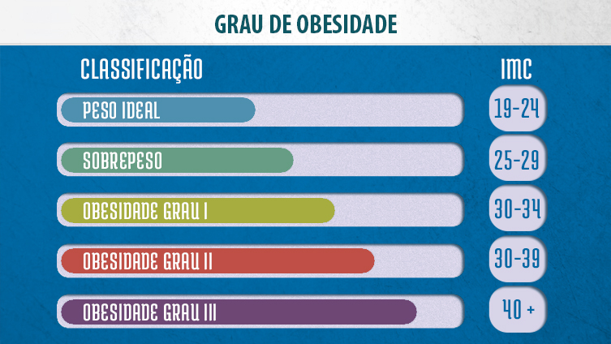

Você sabe o que é IMC?

Ter um corpo sadio é essencial para todos aqueles que desejam mais longividade e qualidade de vida. A obesidade por exemplo, aumenta em várias vezes os riscos de desenvolver doenças cardiovasculares, como a hipertensão arterial e diabetes. A fim de conferir se o indivíduo está dentro de uma faixa de peso considerada ideal, originou-se o cálculo do IMC ou Índice de Massa Corporal
Partindo de uma relação estabelecida entre o peso e a altura de uma pessoa, é possível fazer uma estimativa se o indivíduo está ou não dentro do peso correto.Com base na altura e no peso de cada pessoa, é possível fazer uma estimativa que ajuda a avaliar se o peso está adequado. Essa dinâmica é importante pois os estados de sobrepeso e obesidade são passíveis de ocasionar doenças e complicações na saúde.
Esse índice é aceito atualmente pelas instituições médicas e também adotado pela OMS (Organização Mundial da Saúde). Vale ressaltar no entanto que este cálculo não indica o estado nutricional de quem está sendo submetido e nem o percentual de gordura. Sendo assim, ressalta-se a importância do acompanhamento de especialistas e a adoção de outros testes e abordagens na hora de se montar qualquer qualquer treino ou partir para algum diagnóstico
Apenas para ilustrar o caso, dois indivíduos com mesma altura e que apresentem IMC elevado, não necessáriamente se encontram na mesma condição de saúde. Um deles pode conter muito mais massa magra (músculos) do que o outro. O que reforça a ideia do acompanhamento profissional e de outras estratégias para um diagnóstico preciso.
Por essa razão ressaltamos a necessidade do acompanhamento médico constante e do adotamento de outras medidas para determinar o melhor tipo de treino, estratégia em saúde e correlacionados para a obtenção de mais qualidade de vida.
E como calculamos o IMC?
Na realidede o cálculo é bem simples - divida seu peso pela soma da sua altura ao quadrado (altura x altura). A seguir ilustraremos uma situação onde levamos em conta uma pessoa de 1,70m e 75kg
A altura é multiplicada ao quadrado (altura x altura): 1,7 x 1,7 = 2,89m
A seguir pegamos o peso (75 quilos) e dividimos pela multiplicaão da altura (2,89m)
Seguindo a fórmula (75 / 2,89) = IMC 25,95.
Fiz o cálculo e agora? Como interpretar esse resultado?
O cálculo leva uma refência como base, abaixo ilustramos o que significa cada valor:
Agora que você ja se atentou para a relevância do IMC, que tal calcular o seu?